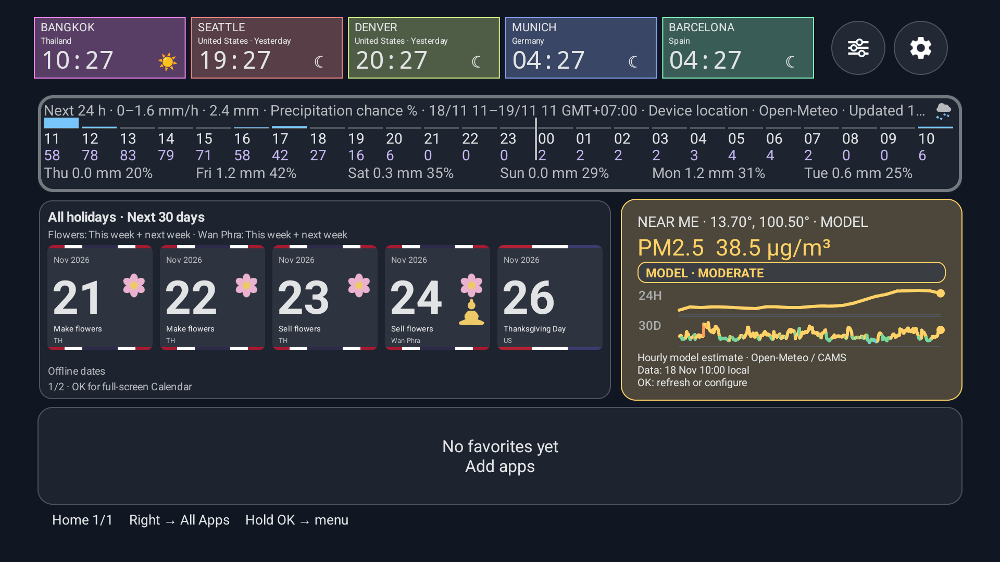

Your TV, your home screen
Homeboard TV
Useful widgets and favorite apps, together on your Google TV.
Rain forecasts · Calendar · Bangkok air quality
World clocks · Phone configuration · Wallpaper providers

Install on your TV
- Download the APK on your phone or computer.
- Transfer it to your TV using a USB drive, where supported, or a TV file-transfer app.
- Open it with a TV file manager. Allow “Install unknown apps” for that file manager, install, then turn that permission off.
- Open Homeboard TV from your apps.
Menu names and transfer methods vary by TV.
Updates & release details
Install newer public versions over the existing public app to retain settings. If Android rejects an update, ask for help before uninstalling.
Testing Homeboard already? The public app is separate from the debug test app. Its settings do not transfer automatically.
Release notes & known limits
Verified release notes will appear here. This preview does not promise a release date.
Verify the download
APK SHA-256, signing certificate, version and source revision will come from the verified release record.